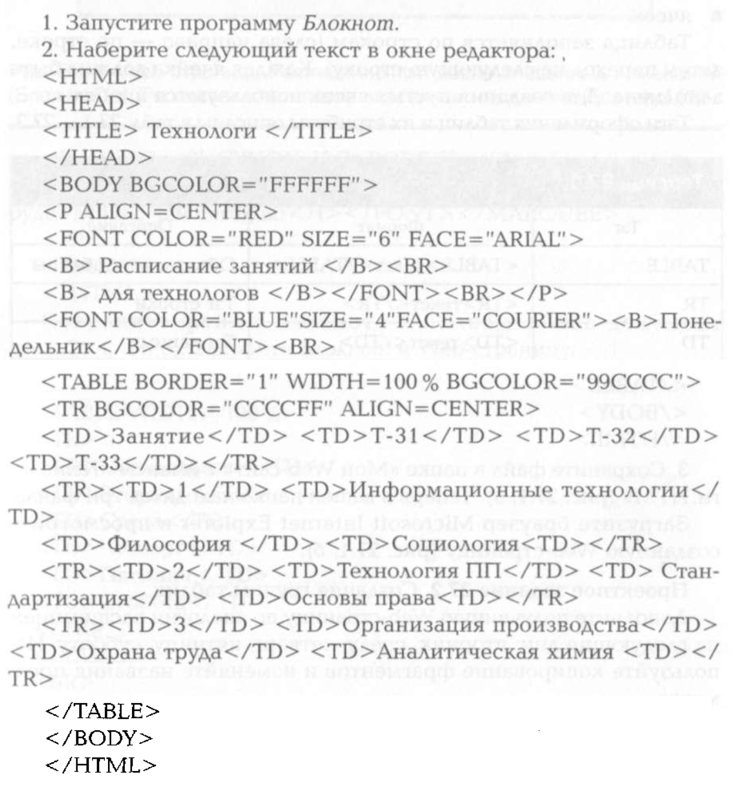
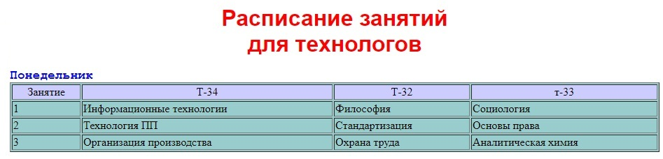
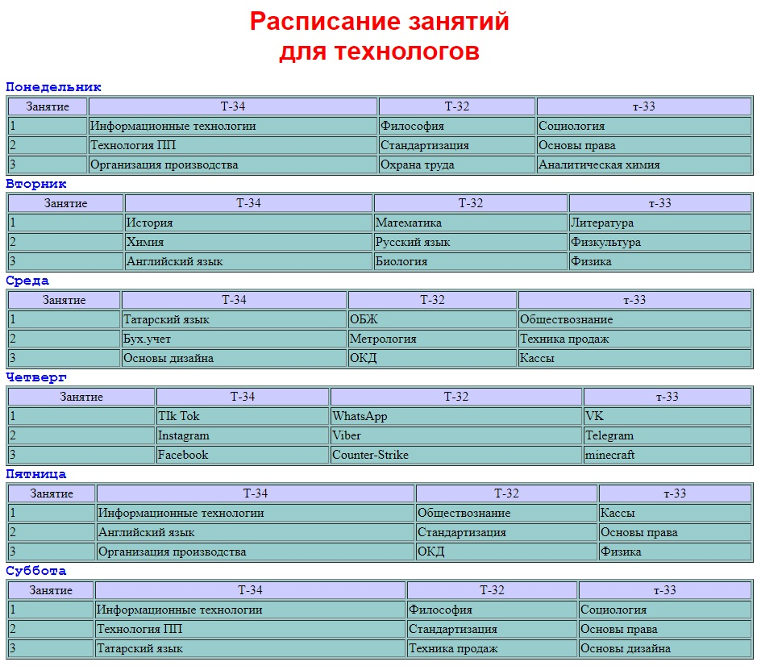
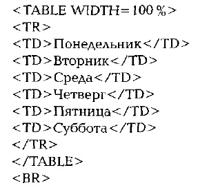
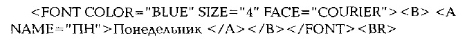
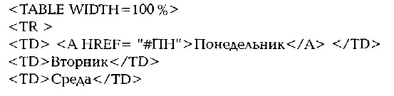
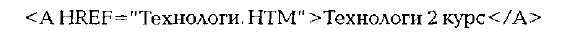
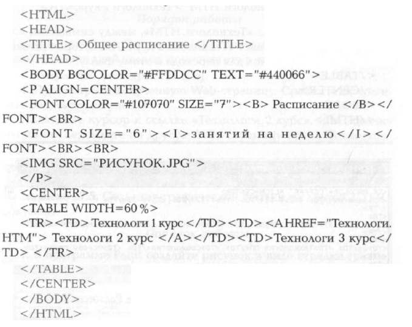

Таблица является особой частью HTML-документа. Она представляет собой прямоугольную сетку, состоящую из вертикальных столбцов и горизотальных строк. Пересечение строки и столбца называется ячейкой
Ячейка может содержать в себе текст, графику или другую таблицу.
Таблица состоит их 3 основных частей:
|
|
|
Таблица 1.1 | Таблица 1.2 | Таблица 1.3 | |||||||||||||||||||||||||||||||||||
Порядок работы


Сохраните файл в папке "Web site" с именем "Teхнологи. HTM"
Дополните полученную WEb-страницу по аналогии расписанием на следующие дни: вторник, среду, четверг, пятницу, субботу. Используйте копирование фрагментов и изменяйте название предметов. Измените самостоятельно цвет текста и цвет фона таблицы.

Построение гипертекстовых связей. Важнейшим свойством языка HTML является возможность включения в документ ссылок на другие документы. Возможные ссылки:
В качестве ссылки можно использовать текст или графику.
Ссылки в пределах одного документа. Такие ссылки требуют наличия 2 частей: метки и самой ссылки. Метка определяет точку, на которую происходит переход по ссылке. Ссылка использует имя метки, она же выделяется цветом или подчеркиванием в зависимости от того, как настроен браузер. Для изменения цвета ссылки используют атрибуты LINK= и VLINK= тэга <BODY>.
Опишем ссылку:
<A HREF="#ПН"> Понедельник </A>
Перед именем метки (ПН), указывающей, куда нужно переходить по ссылке, ставится символ # . Между символами < и > распологается текст - "Понедельник", по которому должен быть произведен щелчок для перехода по ссылке.
<A NAME="#ПН"> Понедельник </A>
Порядок работы
1.Дополните файл Технологи.HTM описанием таблицы, содержащей названия дней недели, поместив его в начало WEB-страницы:

2. Вставьте в файл Технологи.HTM метку, указывающую на понедельник:

3. Вставьте в таблицу с названиями дней недели ссылку для выбранной метки:

4. Сохраните файл.
5.Просмотрите полученную Web-страницу.
6.Сделайте ссылки на остальные дни недели.
7.Сделайте ссылку на возврат к выбору дней недели.
У вас должно примерно получиться примерно как на видео (я специально добавил между таблицами расстояние в 5 срок, таким образом демонстрация перехода по ссылкам становится более наглядной.) :
Переход по ссылкам в рамках одной странице
Ссылки позволяют щелчком по выделеному слову или фразе перейти к другому файлу.Опишем ссылку с надписи "Технология 2 курс" файла Расписание.HTM на файл Технология.HTM:

После имени файла "Технология.HTM", между символами > и < распологается текст "Технологи 2 курс", на котором должен быть произведен щелчок для перехода к этому файлу.
Порядок работы
1. Откройте файл Расписание.HTM с помощью блокнота и внесите изменения:

2. Сохраните изменения и посмотрите что у вас получилось. Должно получиться так:
Переход по ссылке на другую страницу
Порядок работы
1.В программе Paint создайте рисунок в виде стрелки (размером 3,0 см на х 3,0 см) и сохраните его в формате JPG с именем "Стрелка" в свой папке, которую вы ранее создали, "Web site".
2.Внесите изменения в файл Технологи.HTM таким образом, чтобы в конце страницы была ссылка на головную страницу "Расписание" (файл Расписание.HTM). В качестве ссылки используйте графический файл с именем "Стрелка". Пример показан на видео.
Графическая ссылка со странице Технологи на Расписание.